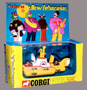
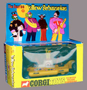
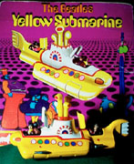
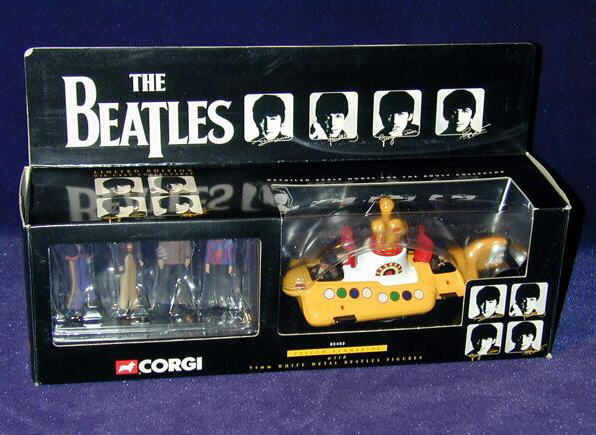
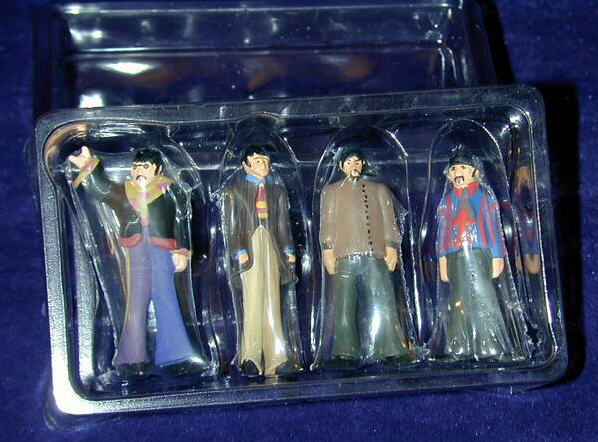

|
Pictured to the left is the rare 1st issue Corgi Yellow
Submarine toy. This was an early variation that had a very short run. On this
issue the yellow and white hatches match the color of the hull and it has the
red strip outlining the top half of the sub which the later variation is
missing. These characteristics of the sub are found on the sub in the film
"Yellow Submarine". This is the way the toy is pictured on the back of the box
on all of the packages and in the photograph in the Corgi catalog that came
with the toy. According to Perry Cox, this variation is 50 to 1 rarer
than the later issues that same year.
|
{kind=link}
{kind=link}
| Click on photos for larger views | ||
 |
 |
 |
| Original 1968 Variation | Later 1968 Variation | Back of package |
{kind=link}
{kind=link}
{kind=link}
Featured here is the **NOW DELETED** Beatles Yellow Submarine CORGI Die Cast Collectable which was issued in 1999 by Corgi Classics UK as a limited edition of just 5,250.
The Yellow Submarine comes complete with four metal Beatles figures (one of each Beatle – see scan 2). The Yellow Submarine and The Beatles figures are neatly housed in a Black Box with header card with perspex see through windows.
The complete package is graded in **Mint As New** condition.
Due to its very brief release, many collectors missed the opportunity to purchase this Corgi Classic at the time - collectable!
 |
 |